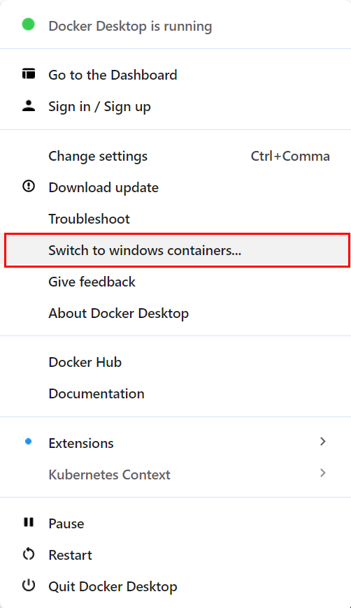

Visual Editor Installation
This document outlines an installation guide for using the workbench with its visual editor. See the codebase installation for how to install the codebase to be use-able in Python scripts.
Step 0: Install Docker
If you are unsure which variant of docker install, we recommend Docker Desktop to you.
-
On windows, you might have to toggle docker to use linux containers 1) right-click the Docker Desktop icon in your status bar 2) click the Switch to linux containers button
-

Step 1: Download the docker-compose.yml
Download the docker-compose.yml file to your machine to a location of your choice.
This file tells docker how to orchestrate the containers required to run the workbench editor.
(In case you have already checked out the repository: You can use the docker-compose.yml directory in your git project instead)
Step 2: Start the workbench editor
Switch to a CLI (e.g. cmd) and change into the directory of the downloaded file. (If you are unsure where your file is: Under windows: Shift-right-click the folder containing the file and select Open in Terminal.)
Run the docker compose up command in the CLI.
In case you receive an error during connect error: Ensure Docker (Desktop) is
running.
Step 3: Done
Open http://localhost:8080 in your browser. You might have to wait for the console to pause its output/the backend to be ready.
How to use your own data with the graphical interface:
By default, the docker setup mounts a own_data directory,
which allows you to use your own input files.
(Internally, they are mounted to examples/own_data.)
How to update the graphical interface:
Run docker compose pull, but Step 2 should update the images automatically.
Certain updates might require you to also update the docker-compose.yml file,
in which case you will have to perform Steps 1 and 2 again.
How to reset the graphical interface:
In case the application fails to start after an update, etc.:
Run docker compose down to reset the interface.
Then continue with Step 2 to start the interface again
How to use a local codebase
In your docker-compose.yml file: Go to the services.py_runner.volumes key
and uncomment/add the following lines:
Change the ./path/to/my/codebase/ path to point to codebase directory.
(Special case: If you are using the docker-compose.yml from the codebase's
directory, uncomment the # option 1 lines instead.)
Now the container will start with your local codebase.
After making changes to your local codebase, restart the py_runner container
with docker compose restart py_runner to apply them.
In case you have modified the component signatures, you have to reset the stored components in the database: use the Reset page and then restart the py_runner container. The Runners page might help with dead runners.
Configuration Options
The docker image provides a set of configuration options. Some of these options are only available to the docker container, while others are set by default and are only available to the runner CLI script.
By default, the setup works without any modifications,
| Environment Variable | CLI Argument | Description |
|---|---|---|
MINIO_HOST |
--s3 |
S3 Storage Host |
S3_ACCESS_KEY |
-s3-access |
Access Key (for S3) |
S3_SECRET_KEY |
--s3-secret |
Secret Key (for S3) |
BACKEND_HOST |
--backend |
Gem Backend Host |
PREPARE_TEMPLATES |
--templates |
Wheather to (default false) |
-p |
Python path of the runner | |
-i |
Path to import for component loading | |
LIQUIDEARTH_TOKEN |
Default token used for the LiquidEarth API. |